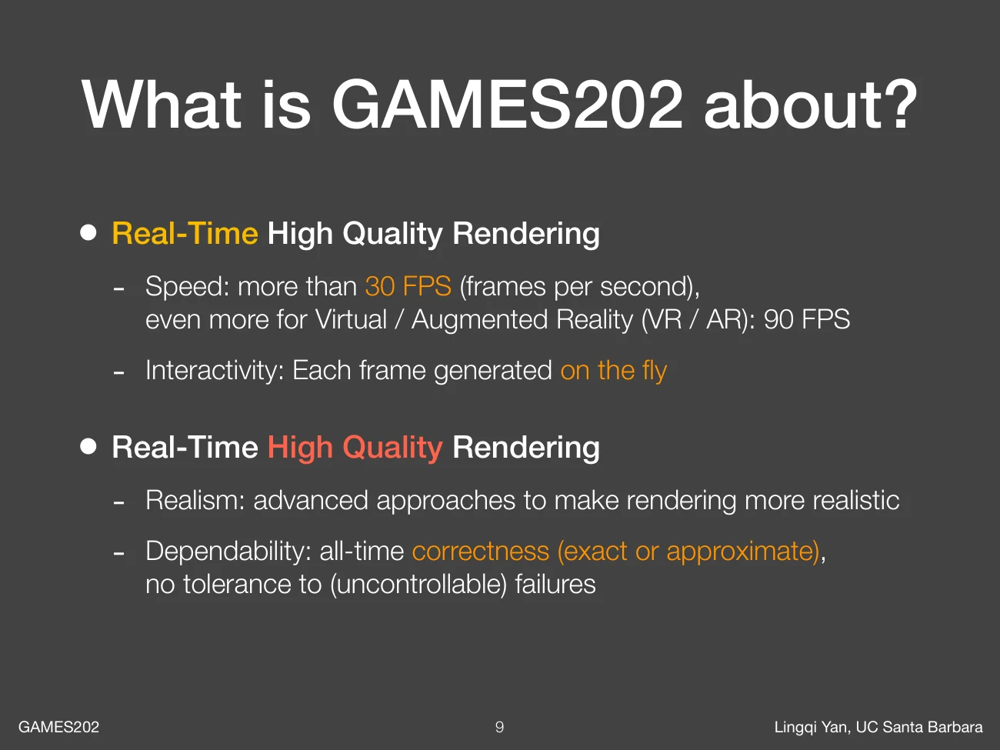
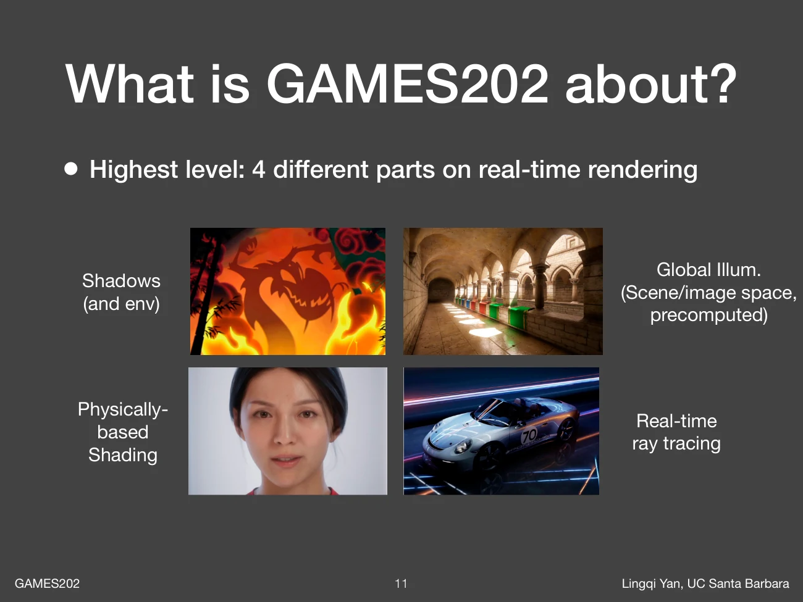
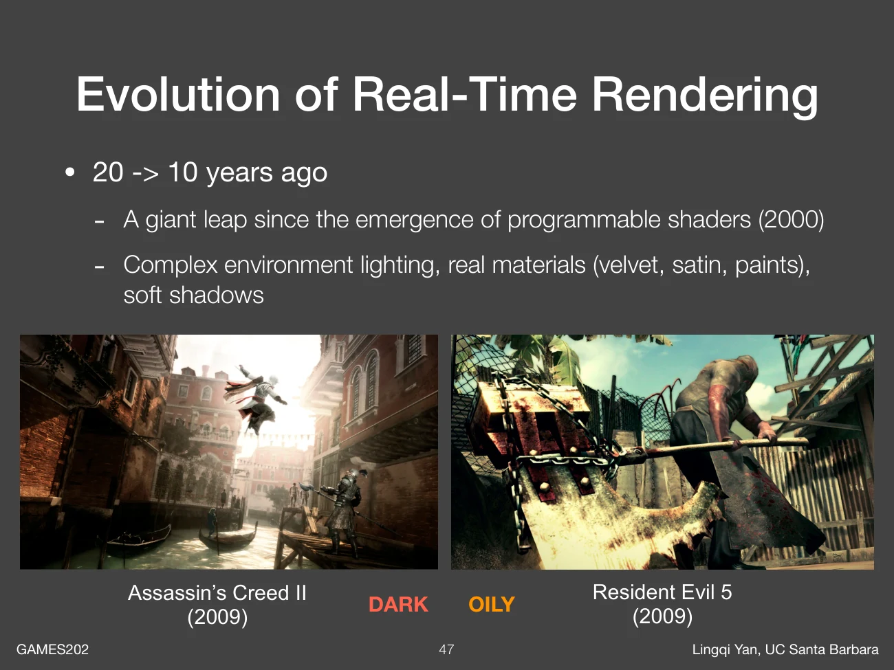
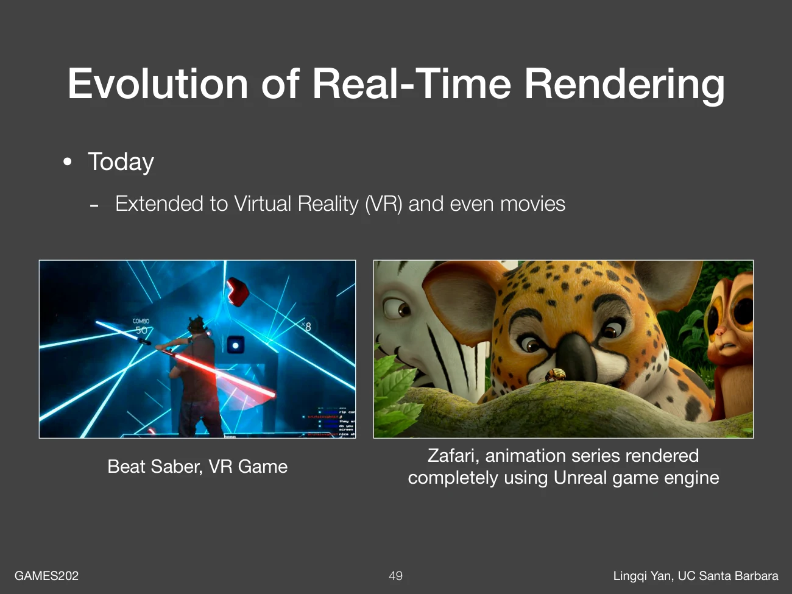
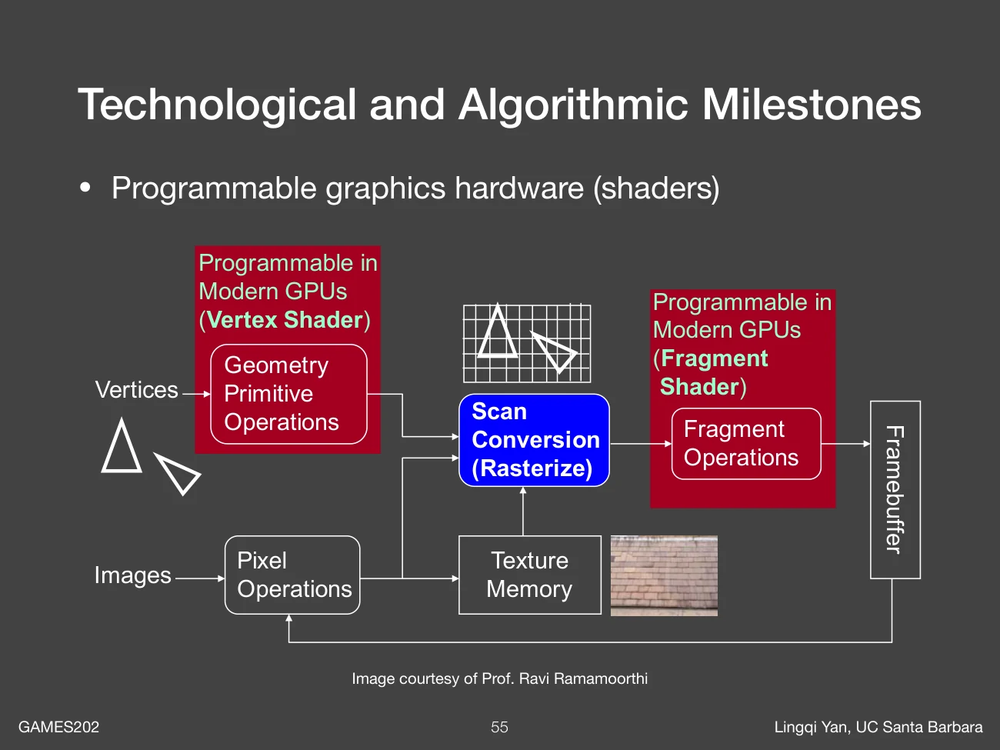
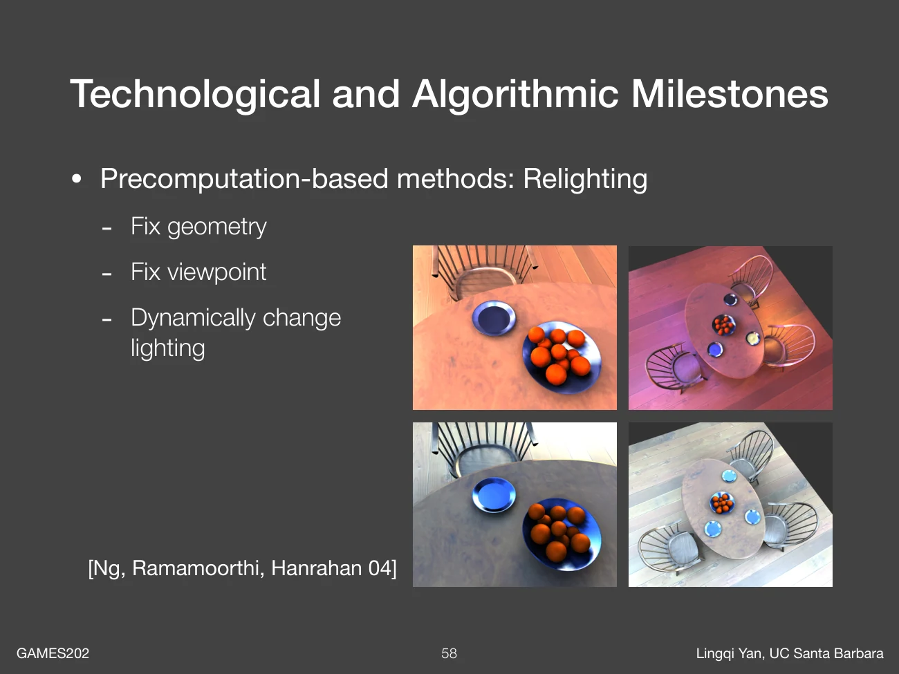
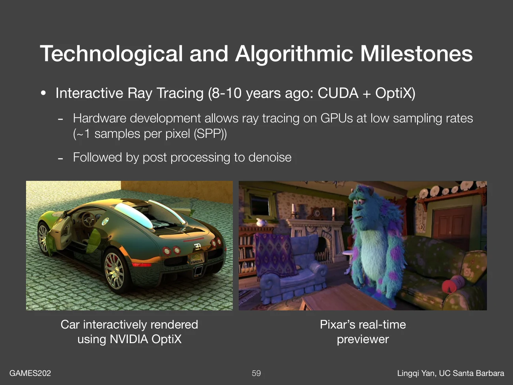

第 1 讲：课程导论——实时高质量渲染的全景与学习路线
用一讲时间说清楚：GAMES202 学什么、不学什么、怎么学，以及实时渲染技术五十年的演进脉络。
◆ 学完这一讲，你应该能
能用自己的话解释「实时高质量渲染」的两个关键词：Real-Time（速度/交互）与 High Quality（真实感/可靠性）
能画出实时渲染的三条技术主线：可编程着色器、预计算、交互式光线追踪，并各举一个代表技术
能区分科学（science）与技术（technology）的关系，理解「实时渲染 = 快速近似离线渲染 + 系统工程」
能说明本课程的前置要求、作业形式（GLSL + WebGL 骨架）与最终项目安排
能列举本课程覆盖的主题（阴影、全局光照、PRT、实时 ray tracing、抗锯齿等）与明确不覆盖的内容（建模、离线渲染、NeRF、OpenGL 教学等）
核心结论速记
实时渲染的核心矛盾是「速度 vs 质量」：必须在每帧毫秒级预算内给出可信结果，因此本质是「快速 + 近似」的离线渲染。
实时渲染不仅要求快，还要求可靠（dependability）：不允许出现不可控的失败，结果必须每帧稳定正确（精确或近似均可）。
渲染的定义始终是「计算光 → 眼睛」：输入是 3D 场景（网格、光源等），输出是图像。
实时渲染技术演进的三块里程碑：可编程图形硬件（shader）、基于预计算的方法、交互式光线追踪（CUDA/OptiX + 降噪）。
预计算方法的典型套路是「固定几何、固定视角，动态改变光照」，把复杂效果提前算好，运行时只付最小代价。
工业界在实时渲染技术上领先学术界，学习要靠大量实践（practice makes perfect），而不是只读论文。
本课程是「基础课」与「研究前沿」之间的桥梁：讲的是工业界已经在用的高级实时技术，而不是 OpenGL 入门或离线渲染。
课程作业用 GLSL + WebGL 骨架，重点是写 shader，不需要 IDE；最终以课程项目代替考试。
011. 这门课到底在讲什么：速度、真实感与可靠性
GAMES202 的标题是 Real-Time High Quality Rendering（实时高质量渲染），定位是「中级课程」——上接图形学基础（GAMES101 一类），下接研究前沿。它不教你从零写渲染器，而是把工业界已经在用的高级实时技术系统地过一遍。
先把标题拆成两个词：
- Real-Time（实时）：速度要求不只是「帧率高」。课件特别强调，对 VR/AR 来说帧率要求更高（通常要 90 FPS 甚至更高），否则会晕。另一个关键词是 interactivity（交互性）：每一帧都是在运行时「当场」生成的，不能提前烘焙好整段动画。
- High Quality（高质量）：包含两层。第一层是 realism（真实感），用更高级的方法让画面更接近真实；第二层是 dependability（可靠性），即「all-time correctness」——任何时刻结果都必须正确（精确或近似都行），不允许出现不可控的失败。这一点是实时渲染和离线渲染的重要区别：离线渲染一帧渲错了可以重渲，游戏里掉一帧就是事故。
所以整门课的主线可以浓缩成一句话：在每帧几毫秒到几十毫秒的预算内，用近似手段做出可信的光照与材质效果，并且保证稳定。 后面所有技术——阴影贴图、PRT、实时 ray tracing、TAA/DLSS——都是在这条主线下做的取舍。

补充说明
「dependability」是这一讲最容易被跳过、但最影响工程思维的点：它解释了为什么实时渲染大量使用保守近似（如阴影 bias、降噪、时间复用），而不是追求无偏。
常见坑
把「实时」只理解成「帧率高」→ 忽略了 interactivity 与 dependability → 做项目时只追帧数，结果出现闪烁、抖动、时好时坏，这在游戏里不可接受。
把「高质量」等同于「物理正确」→ 实时渲染允许近似，关键是「看起来对且稳定」，不必追求离线 path tracing 级别的精确。
UE / Unity 落地
UE 的帧预算概念：在 Project Settings → Engine → General 里可设 Frame Rate Limit；VR 项目默认目标 90/120 Hz，对应每帧约 11ms/8ms 的硬预算。
Unity 的 Quality Settings 里有 V Sync Count 与目标帧率；URP/HDRP 的 Render Pipeline Asset 里可调阴影距离、级联数等，本质就是在「质量 vs 速度」之间做取舍。
022. 渲染的定义与课程主题地图
课件用一句话定义了渲染：计算光 → 眼睛（Calculating light -> eye）。输入是一个 3D 场景（meshes、lights 等），输出是一张图像。这个定义看似简单，但它决定了整门课的所有主题都是在回答「光怎么从光源到相机」。
课件把实时渲染的「最高层」拆成几大块，对应本课程的主题：
- Global Illumination（全局光照）：场景空间或图像空间的 GI，包括预计算的方法；
- Shadows（and env）：阴影与环境光照，包括预计算的阴影；
- Physically-based Shading（基于物理的着色）：材质如何响应光照；
- Real-time Ray Tracing（实时光线追踪）：硬件光追 + 降噪。
具体到每一讲，课程覆盖：
- Shadow and Environment Mapping：实时、全频的动态场景阴影（如 Annen 等人的工作）；
- Interactive Global Illumination：交互式 GI，例如 Micro-Rendering 做可扩展的 final gathering；
- Precomputed Radiance Transfer（PRT）：预计算辐射传输，例如用 Radiance Regression Functions 做 GI；
- Real-Time Ray Tracing：硬件光追；
- Participating Media Rendering、Image Space Effects：参与介质（单次散射）、屏幕空间反射等；
- Non-Photorealistic Rendering（NPR）：非真实感渲染，如《动物森友会》《原神》的卡通风格（课件说明不会深入讲）；
- Antialiasing and supersampling：抗锯齿与超采样，如 1080p TAA、540p DLSS、540p TAAU；
- Chatting about techs / games：结合 UE Demo 和实际游戏（如《最后生还者 第二部》《怪物猎人 崛起》）聊技术。
注意这张地图的层次：着色（shading）是「一个点怎么反光」，阴影和 GI 是「光怎么到达这个点」，抗锯齿是「像素怎么采样」。三者合起来才是一帧图像。

常见坑
把 GI 和阴影当成同一件事 → 阴影只回答「直接光被谁挡住」，GI 回答「间接反弹的光从哪来」→ 排查画面发黑时先分清是阴影问题还是缺少间接光。
以为 NPR 是「不真实的渲染」→ 它其实是刻意风格化，仍然需要正确的光照与阴影做支撑 → 做卡通渲染时底层光照模型照样要写对。
UE / Unity 落地
UE 的 Lumen 对应课件里的「实时 GI」；Shadow Map / Virtual Shadow Map 对应「Shadows」；材质编辑器里的 PBR 节点对应「Physically-based Shading」。
Unity 的 URP 里 Screen Space Ambient Occlusion、Screen Space Reflections 对应课件里的「Image Space Effects」；HDRP 的 Ray Tracing 对应「Real-time Ray Tracing」。
033. 这门课不教什么：划清边界才不会走偏
导论课最有价值的部分之一，是明确「不教什么」。课件列了四类：
- 不教 3D 建模和用 UE 做游戏开发。课件甚至贴了 CSGO 的 POV 相机设置、Maya 里做角色动画的教程链接，意思是这些请去别处学。本课程假设你已经有场景和模型，只关心「怎么把它渲染好」。
- 不教电影/动画里昂贵但更准确的光传输技术。例如 Gradient Domain Path Tracing、Manifold Metropolis Light Transport——这些是离线渲染的前沿，精度高但速度慢，不属于实时范畴。
- 不教神经渲染（Neural Rendering）。课件以 NeRF（Neural Radiance Fields）为例，说明这是另一条研究路线，本课程不展开。
- 不教 OpenGL 本身、场景/shader 优化、shader 逆向工程、CUDA 高性能计算。这些是工具与工程技能，课程只做简要回顾（下一讲会快速复习 GLSL）。
这条边界对自学者尤其重要：GAMES202 讲的是「算法与近似思想」，不是「某个引擎的操作手册」，也不是「某个 API 的教程」。 你学到的应该是「阴影贴图为什么会走样、怎么用级联和 bias 缓解」「PRT 为什么能把 GI 压到实时」「TAA 为什么需要 motion vector」这类可迁移的知识，而不是「在 UE 里点哪个按钮」。
反过来说，这也意味着：想独立开发 3A 游戏，光靠这门课不够，你还需要补建模、引擎使用、性能分析等工程技能；但这门课能让你在遇到画面问题时知道「底层发生了什么」。
常见坑
把课程当引擎教程 → 学完不会调 UE 材质 → 正确做法是把课件算法映射到引擎参数上理解，而不是死记操作步骤。
把 NeRF、路径追踪当成「实时技术」→ 混淆了离线与实时的边界 → 判断标准是「能否在毫秒级预算内稳定出帧」。
UE / Unity 落地
UE 的材质编辑器、蓝图、Sequencer 属于「引擎使用」，课程不教；但课程讲的 shading 模型会直接体现在 Material 的节点计算里。
Unity 的 Shader Graph 同理：课程不教怎么连节点，但教你节点背后在算什么。
044. 怎么学：科学 vs 技术，以及「工业界领先学术界」
课件给了一条很重要的学习心法：理解科学与技术的区别。
- Science（科学）= knowledge（知识）：回答「为什么」「规律是什么」。
- Technology（技术）= engineering skills that turn science into product（把科学变成产品的工程技能）：回答「怎么做得出来、跑得快、不出错」。
课件给实时渲染下了一个精辟的定义：Real-time rendering = fast & approximate offline rendering + systematic engineering（快速近似的离线渲染 + 系统化工程）。这句话值得背下来：它说明实时渲染不是「另一套物理」，而是「同一套物理 + 大量近似 + 大量工程约束」。
接着课件说了一句大实话：在实时渲染技术里，工业界远远领先于学术界（the industry is way ahead of the academia）。原因是工业界有真实产品、真实硬件、真实性能压力。所以学习这门课不能只读论文，要大量实践（practice makes perfect）。
学习方式上，课件给了很具体的建议：
- 看直播的：积极提问；
- 看录播的：建议 0.25x–0.5x 倍速——因为公式和推导密度高，正常速度容易跟不上。
对自学者，我的补充是：每讲至少做一遍「把公式抄一遍 + 用引擎里对应效果验证一遍」，比看三遍视频有效。
补充说明
0.25x–0.5x 倍速这条建议不是玩笑：GAMES202 的公式推导（如 PRT 的球谐投影）信息密度极高，正常速度确实容易漏。
常见坑
只收藏论文不写代码 → 一周后全忘 → 每讲配一个小实验（哪怕只是改一个 shader 参数看变化）。
把「工业界领先」理解成「学术无用」→ 学术提供的是可迁移的方法论 → 正确姿势是「用学术理解原理，用工程验证效果」。
UE / Unity 落地
UE 的 RenderDoc / Unreal Insights、Unity 的 Frame Debugger 都是「工程验证」工具：学完一讲后，用它们看一帧里阴影、GI、后处理各花了多少毫秒。
055. 课程安排：前置、作业、项目与工具
这一节把课程的后勤信息整理清楚，方便你规划学习节奏。
前置要求（Prerequisites）
- 对渲染/图形学有强烈兴趣；
- 有计算机图形学基础（或等价经验）；
- 基础微积分；
- 基础 GLSL（OpenGL Shader Language）——下一讲会快速复习，并配一个可选的热身作业。
课程信息
- 课程网站：
http://www.cs.ucsb.edu/~lingqi/teaching/games202.html，有 syllabus、slides、阅读材料； - 没有指定教材。阅读材料主要是 SIGGRAPH course + 引擎设计文档，课件课后放出；
- 可能参考书：Akenine-Möller 等人的《Real-time Rendering》第 4 版（但课件说它和本课程的关系不像「虎书」之于 GAMES101 那么紧密）。
作业（Assignments）
- 编程作业，语言是 GLSL；
- 代码骨架是 JavaScript + WebGL；
- 每个作业约 1.5 周；
- 提交截止时间是 AoE（Anywhere on Earth）当天 23:59，一周内给反馈；
- 提交网站：
http://smartchair.org/GAMES202。
考核
- 没有考试；
- 有课程项目/最终项目，课程中途开始，题目自选（会提供参考），最好的作品会放到网上展示。
工具
- 不需要 IDE。因为大部分时间在写 shader，用文本编辑器（Sublime Text、Vim、Emacs）或在线编辑器即可。IDE 的价值是解析整个工程、给语法提示，但写 shader 时收益不大。
学术诚信
- 独立完成作业，不抄袭；
- 不公开基于骨架代码的作业代码（GitHub 等）；
- 不公开答案；讨论和讲解是欢迎的。
补充说明
AoE 时间是个实用细节：它意味着全球统一截止，中国时区通常比 AoE 早约 12 小时，别算错。
常见坑
以为要装 Visual Studio 才能写作业 → 其实文本编辑器 + 浏览器即可 → 把精力花在 shader 逻辑上。
作业拖到截止前才做 → WebGL 骨架需要时间熟悉 → 建议拿到骨架先跑通「画一个三角形」再改。
UE / Unity 落地
课程用 WebGL 骨架，但 GLSL 的语法与 UE 的 HLSL、Unity 的 HLSL/ShaderLab 高度相似：
vec3vsfloat3、mixvslerp、texture2DvsTexture2D.Sample，迁移成本很低。UE 里写 Custom 节点或 .usf 文件、Unity 里写 .shader 文件，本质都是同一套 shader 思维。
066. 实时渲染的五十年：从 SGI 到光追
课件用一条时间线串起实时渲染的演进，这条线是理解后续所有技术「为什么出现」的背景。
（1）最早的交互式 3D 图形管线
从 SGI 机器（Clark 等人）到今天的 OpenGL 管线，早期重点一直是「更多几何、更多纹理」，再加一些提升真实感的小技巧（shadow mapping、accumulation buffer）。SGI Reality Engine（Kurt Akeley）是这一阶段的代表硬件。
（2）约 20 多年前：简单纹理 + 假阴影
代表作是《最终幻想 VII》（1997）和《反恐精英》（1999）。这一阶段用 OpenGL/DirectX 做交互式 3D 几何，纹理简单，阴影是「假的」（比如贴一张圆形阴影贴图）。
（3）约 10–20 年前：可编程着色器带来巨变
2000 年可编程 shader 出现，是实时渲染的「大跃进」。从此可以写复杂的环境光照、真实材质（天鹅绒、缎面、油漆）、软阴影。代表作《生化危机》（2009）、《刺客信条 II》（2009）、《DARK OILY》（2009）。
（4）今天：照片级、VR、甚至电影
《战神》（2018）代表「stunning graphics」；实时渲染扩展到 VR（《Beat Saber》）甚至电影——动画剧集《Zafari》完全用 UE 渲染。2018 年还有 UE 的照片级森林、NVIDIA 的实时 ray tracing demo。
（5）未来
课件用《黑客帝国》（1999）和《头号玩家》（2018）两部电影作为「未来」的想象：完全沉浸、完全实时的虚拟世界。
这条线告诉我们：每一次「画面飞跃」背后都是一次硬件能力 + 算法思想的结合——固定管线 → 可编程 shader → 预计算 → 硬件光追。


常见坑
把时间线记成「硬件越来越快」→ 忽略了算法（预计算、降噪）的贡献 → 实际上很多效果是算法突破而非纯算力。
以为「假阴影」是黑历史 → 它其实是实时渲染「近似换速度」思想的最早体现 → 理解这一点才能理解后来的 shadow map bias 等技巧。
UE / Unity 落地
UE5 的 Nanite（几何）+ Lumen（GI）+ Virtual Shadow Map（阴影）可以看作这条时间线在当前阶段的集大成：几何、光照、阴影各自有独立的近似策略。
Unity HDRP 的 Ray Tracing 支持对应课件里「今天」的硬件光追阶段。
077. 三块技术里程碑：shader、预计算、交互式光追
课件把实时渲染的技术与算法里程碑归纳为三块，这也是理解后续各讲的「索引」。
（1）可编程图形硬件（Programmable Graphics Hardware，约 20 年前）
代表是 NVIDIA 的 A New Dawn demo。现代 GPU 管线里，Vertex Shader（顶点着色器） 和 Fragment Shader（片元着色器） 是可编程的，而 Geometry、Primitive Operations、Scan Conversion（光栅化）、Fragment Operations、Framebuffer、Pixel Operations、Texture Memory 等环节是固定功能或半固定功能。
这条管线是：顶点 → 图元装配 → 光栅化 → 片元 → 帧缓冲。理解它，才能理解「shader 里能拿到什么、不能拿到什么」——比如片元 shader 里拿不到「其他片元」的信息，这正是屏幕空间技术（SSR、SSAO）出现的原因。
（2）基于预计算的方法（Precomputation-based Methods，约 10 多年前）
核心思想：复杂视觉效果（部分地）提前算好，运行时只付最小渲染代价。代表工作包括：
- All-Frequency Rendering of Dynamic, Spatially-Varying Reflectance（Wang 等）；
- Relighting：固定几何、固定视角，动态改变光照（Ng、Ramamoorthi、Hanrahan）。
PRT 是这一类方法的典型：把「光如何从环境传到表面」预计算成一组系数，运行时只做点乘。代价是「几何/视角/材质不能随便变」。
（3）交互式光线追踪（Interactive Ray Tracing，约 5–10 年前：CUDA + OptiX）
硬件发展让 GPU 能在低采样率（约 1 SPP，samples per pixel）下做光追，然后靠后处理降噪（denoise）。课件展示了 Pixar 用 NVIDIA OptiX 实时预览器交互渲染汽车的例子。
这三块正好对应三种「换速度」的思路：可编程 shader 换灵活性、预计算换运行时开销、低采样 + 降噪换光追成本。



常见坑
以为片元 shader 能访问任意其他像素 → 不能 → 所以屏幕空间效果需要额外的 pass 和纹理来传递信息。
以为预计算方法「过时了」→ 它仍是很多移动端/低端设备的 GI 方案 → 判断标准是「场景是否可预计算」。
以为 1 SPP 光追「画质差」→ 配合时域降噪后画质可接受 → 关键在降噪与运动向量，而不是采样数本身。
UE / Unity 落地
UE 的 Lumen 同时用了「屏幕空间 + 硬件光追 + 距离场」多种手段，可以看作三块里程碑的混合体；Virtual Shadow Map 则是阴影方向的预计算/缓存思路。
Unity 的 Lightmap（Baked GI）是典型的预计算方法：固定几何与光照，运行时只采样；Enlighten 支持动态光照但几何仍受限。
088. 下一讲预告与本讲收束
课件最后预告了下一讲：一次快速而「粗暴」的复习（a swift and brutal recap），内容包括：
- Graphics Pipeline（图形管线）；
- Shader Language（着色语言）；
- Rendering Equation（渲染方程）；
- Calculus（微积分）。
这四样是整门课的地基：管线决定「在哪算」，shader 语言决定「怎么写」，渲染方程决定「算什么」，微积分决定「怎么推」。如果你对其中任何一项不熟，建议在下一讲之前补一下——尤其是渲染方程，后面 PRT、GI、光追全都建立在它上面。
把这一讲收束成三句话：
- 实时高质量渲染 = 快速近似离线渲染 + 系统工程，约束是速度、真实感、可靠性三者兼顾。
- 技术演进的三块里程碑：可编程 shader、预计算、交互式光追 + 降噪；后续每一讲都可以归到其中一类。
- 学习方法：理解科学与技术的区别，重视实践，用引擎验证算法。
最后，课件用一句话回答「为什么学 GAMES202」：Computer Graphics is AWESOME! 对要独立开发 3A 游戏的你来说，这门课的价值在于：当你在 UE/Unity 里调一个阴影、一个 GI、一个抗锯齿参数时，你知道它背后在算什么、代价是什么、什么时候会崩。
常见坑
跳过导论直接看后面 → 不知道各讲之间的位置 → 建议把本讲的「主题地图」和「三块里程碑」抄在笔记首页，每学一讲就归位一次。
UE / Unity 落地
下一讲复习渲染方程时，可以对照 UE 材质里的 Emissive、Base Color、Roughness/Metallic 输入，理解它们分别对应渲染方程的哪一项。
引擎对照表
| 概念 / 效果 | Unreal Engine | Unity |
|---|---|---|
实时全局光照（GI） | Lumen（屏幕空间 + 硬件光追 + 距离场混合） | HDRP Ray Tracing GI / Enlighten Realtime GI / Light Probes |
实时阴影 | Virtual Shadow Map、Cascaded Shadow Maps | URP/HDRP 的 Shadow Map、Cascade、Contact Shadows |
基于物理的着色 | Material 的 Base Color / Metallic / Roughness / Specular 输入 | Standard Shader / HDRP Lit Shader 的 PBR 参数 |
预计算 GI（光照贴图） | Lightmass（Baked Lighting） | Baked GI / Lightmap / Light Probes |
实时硬件光追 | Ray Tracing（Project Settings 中开启，配合 Lumen） | HDRP Ray Tracing（DXR） |
抗锯齿与超采样 | TAA、TSR、DLSS 插件 | TAA、DLSS（HDRP）、FSR |
术语双语表
| English | 中文 | 说明 |
|---|---|---|
| Real-Time Rendering | 实时渲染 | 在毫秒级预算内每帧当场生成图像，要求速度、真实感与可靠性兼顾。 |
| Dependability | 可靠性 | 实时渲染要求任何时刻结果都正确（精确或近似），不允许不可控失败。 |
| Interactivity | 交互性 | 每一帧都在运行时生成，而非预渲染整段动画。 |
| Programmable Shader | 可编程着色器 | GPU 上可编程的顶点/片元阶段，2000 年前后出现，是实时渲染的转折点。 |
| Precomputation-based Methods | 基于预计算的方法 | 把复杂效果提前算好，运行时只付最小代价；典型如 PRT、Lightmap。 |
| PRT (Precomputed Radiance Transfer) | 预计算辐射传输 | 把光传输预计算成系数，运行时点乘，支持动态光照但几何/视角受限。 |
| Interactive Ray Tracing | 交互式光线追踪 | GPU 低采样率光追 + 降噪，代表技术为 CUDA/OptiX。 |
| SPP (Samples Per Pixel) | 每像素采样数 | 光追中每个像素的采样次数；实时常用约 1 SPP，靠降噪补画质。 |
| NPR (Non-Photorealistic Rendering) | 非真实感渲染 | 刻意风格化的渲染，如卡通渲染；课程不深入讲。 |
| GLSL | OpenGL 着色语言 | 本课程作业使用的着色语言，语法与 HLSL 高度相似。 |
课后练习
01 用一句话解释「实时高质量渲染」中的「高质量」包含哪两层含义，并各举一个反例说明缺少它会怎样。
查看答案
提示：
从 realism 与 dependability 两个词入手。
高质量包含 realism（真实感）与 dependability（可靠性）。缺少真实感：画面像塑料、光照平淡，玩家一眼看出「假」；缺少可靠性：画面出现闪烁、抖动、时好时坏（如 TAA 鬼影、阴影 acne），在游戏中不可接受，因为不允许不可控失败。
02 课件把实时渲染定义为「fast & approximate offline rendering + systematic engineering」。请解释为什么说实时渲染是「近似」的，并举出两个课件提到的近似手段。
查看答案
提示：
想想预计算和降噪。
因为精确的光传输（如路径追踪）太慢，无法在毫秒级预算内完成，所以实时渲染用近似换速度。课件提到的近似手段包括：预计算方法（把复杂效果提前算好，运行时只付最小代价，如 PRT、relighting）；交互式光追用低采样率（约 1 SPP）+ 后处理降噪。此外早期的「假阴影」也是近似。
03 课件把实时渲染的技术里程碑分为三块。请分别写出名称、大致年代、代表技术或工作，并说明各自「换速度」的思路。
查看答案
提示：
shader、预计算、光追。
（1）可编程图形硬件（约 20 年前）：Vertex/Fragment Shader 可编程，代表 NVIDIA A New Dawn；思路是用灵活性换效果，把固定管线变成可编程。（2）基于预计算的方法（约 10 多年前）：代表 PRT、All-Frequency Rendering、Relighting（固定几何、固定视角、动态光照）；思路是把复杂效果提前算好，运行时只付最小代价。（3）交互式光线追踪（约 5–10 年前，CUDA + OptiX）：低采样率（约 1 SPP）+ 降噪；思路是用低采样换光追成本，靠后处理补画质。
04 判断以下说法是否正确并说明理由：（a）片元 shader 可以读取同一帧中任意其他像素的颜色；（b）预计算方法适合几何和视角都频繁变化的场景；（c）实时渲染不允许使用近似。
查看答案
提示：
联系 GPU 管线与预计算的适用边界。
（a）错。片元 shader 只能拿到当前片元相关的数据（插值属性、纹理采样等），不能任意读取其他像素；这正是屏幕空间技术（SSR、SSAO）需要额外 pass 和纹理的原因。（b）错。预计算方法通常固定几何、固定视角（如 relighting），几何/视角频繁变化会失效；它适合静态场景 + 动态光照。（c）错。实时渲染大量使用近似（预计算、降噪、假阴影），只要求结果「可信且稳定」，不要求物理精确。
05 实践题：在 UE 或 Unity 中新建一个场景，开启实时 GI（UE 用 Lumen，Unity 用 HDRP Ray Tracing 或 Enlighten），对比开启前后同一视角的画面与帧时间。记录：画面差异最明显的是哪个区域？帧时间增加了多少毫秒？
查看答案
提示：
用 UE 的 stat unit / Unreal Insights，或 Unity 的 Frame Debugger / Profiler 看 GPU 时间。
参考答案要点：开启 GI 后，阴影中的暗部、墙角、物体接触处会变亮并出现颜色渗透（color bleeding），这是间接光的效果；帧时间通常增加数毫秒（取决于场景复杂度与分辨率）。若画面几乎无变化，检查是否场景全是直接光、或 GI 被屏幕空间限制（视角外信息缺失）。本题没有唯一数值，重点是建立「效果 ↔ 开销」的对应感。